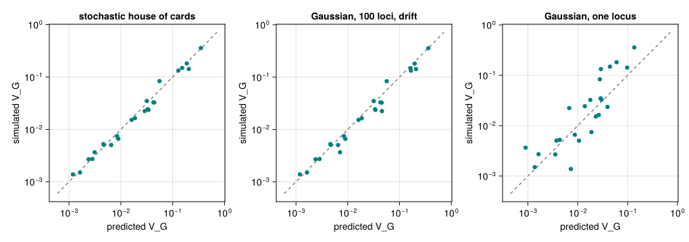
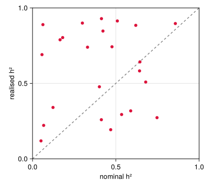
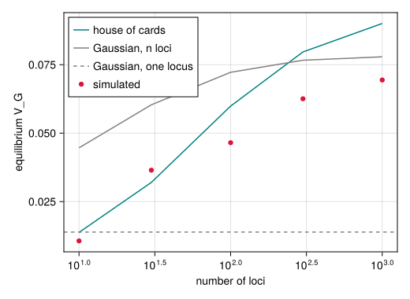

Mutation–selection balance
Simon Frost
- Overview
- Setup
- The mutational input
- Where the “analytical” fitness width comes from
- Equilibrium across the paper’s parameter space
- More loci, more variance
Overview
Before the optimum moves, each population in the paper spends 10,000 generations under stabilising selection, so that it starts the experiment at equilibrium. How much genetic variance it holds then matters: the genetic variance $V_G$ is the raw material of the response to a moving optimum. This vignette measures the equilibrium and compares it with classical approximations and with a model that bridges them.
Mutation adds variance and stabilising selection and drift remove it. Write $V_m$ for the variance mutation adds per generation, $V_s = \omega^2 + V_E$ for the width of selection on genotypes (the fitness function, widened by environmental noise), $n$ for the number of loci, $\mu$ for the mutation rate per locus, $\alpha^2$ for the variance of a mutation’s effect and $N_e$ for the effective population size.
- Lande’s Gaussian approximation (Lande 1975) assumes many alleles of small effect at every locus, so that each locus is Gaussian. Each of the $2n$ allele positions of a diploid keeps the part of selection’s reduction of the variance that falls on its own share; the rest is linkage disequilibrium, which recombination breaks up. At equilibrium $V_G^2/(V_s + V_G) = 2n V_m$, so $V_G \approx \sqrt{2n V_m V_s}$ when mutation is weak (
gaussian_vg_loci; with drift,gaussian_vg_loci(p; drift = true)), the fixed point of the moments lowering withloci = :multilocus. For a single haploid locus it is $\sqrt{V_m V_s}$ (gaussian_vg), the form behind QTSim’s analytical fitness width (below). - The stochastic house-of-cards approximation (Bürger et al. 1989) allows for rare mutations of large effect and for drift: $V_G \approx 4 n \mu V_s \,/\, \left(1 + V_s / (N_e \alpha^2)\right)$. This is the approximation the paper compares its simulations with (its Supplementary Figure S1, labelled equation 21a in its results table).
- The rare-alleles closure (
rare_alleles_vg,run_moments(p; loci = :rare_alleles), the moments lowering’s default for one diploid trait) bridges the two. The Gaussian model takes the fourth moment of the allelic values at a locus to be Gaussian; when a locus is mostly one allele with a few rare mutants, that moment is instead dominated by the mutants, $\alpha^2$ times the variance, so selection removes each rare mutant at its own rate besides the Gaussian loss. For loci in linkage equilibrium its equilibrium is the “stochastic house of Gauss” of Hermisson and Wagner (2004) (house_of_gauss_vg), which is the house of cards when mutations are rare, the Gaussian when they are many, and $2N_e V_m$ when drift dominates; in the multilocus model it keeps linkage disequilibrium and recombination. Its comparison with the kernel across regimes isvalidate/moments_regimes.jl.
Setup
using QTLSim
using CairoMakie, Distributions, Printf, Random, Statistics
CairoMakie.activate!(type = "png")
Threads.nthreads()3The mutational input
Each offspring chromosome receives a Poisson number of mutations with mean $n\mu$, and each mutation adds a Gaussian effect of variance $\alpha^2 = m V_E / (2 n \mu)$ to a random locus. The scaling is chosen so that, in expectation, mutation adds exactly $V_m = m V_E$ to the genetic variance of a diploid individual each generation, whatever the number of loci and the mutation rate. That statement is proved in Lean (mutationalVarianceInput_eq in lean/CategoricalQuantGen/Mutation.lean); here we check it by applying the mutation operator to a large population of zero genomes, for several locus counts and rates.
function mutational_input(p; rounds = 20, seed = 1)
w = World(p); rng = Xoshiro(seed); Δ = Float64[]
for _ in 1:rounds
setgenomes!(w, zeros(p.NoQTL, p.Ploidy, p.PopSize); offspring = true)
mutate!(w, rng) # adds mutations to the offspring buffer
G = genomes(w; offspring = true)
append!(Δ, sum(@view G[:, :, j]) for j in 1:p.PopSize)
end
var(Δ)
end
for (k, (L, rate)) in enumerate(((10, 1e-3), (100, 1e-4), (100, 1e-2), (1000, 1e-3)))
p = Params(PopSize = 20_000, Ploidy = 2, NoQTL = L, MutationRatePerGamete = rate,
PhenotypeVar = 0.02, Heritability = 0.4, MutationScalar = 0.004)
@printf("NoQTL = %4d, rate = %.0e (%4.2f mutations per gamete): variance added %.3e (m·V_E = %.3e)\n",
L, rate, L * rate, mutational_input(p; seed = k), muteVar(p))
endNoQTL = 10, rate = 1e-03 (0.01 mutations per gamete): variance added 4.901e-05 (m·V_E = 4.800e-05)
NoQTL = 100, rate = 1e-04 (0.01 mutations per gamete): variance added 4.770e-05 (m·V_E = 4.800e-05)
NoQTL = 100, rate = 1e-02 (1.00 mutations per gamete): variance added 4.778e-05 (m·V_E = 4.800e-05)
NoQTL = 1000, rate = 1e-03 (1.00 mutations per gamete): variance added 4.810e-05 (m·V_E = 4.800e-05)The input agrees with $m V_E$ to within sampling error in every case, even though the number of mutations per generation differs a hundred-fold between the rows.
Where the “analytical” fitness width comes from
When InitFitnessSD is not given, QTSim and this package use $\omega = V_G / \sqrt{m V_E}$ with $V_G = h^2 V_P$. That is the one-locus Gaussian approximation solved for $\omega$, with $V_s \approx \omega^2$: if $V_G = \sqrt{V_m \omega^2}$ and $V_m = m V_E$, then $\omega = V_G / \sqrt{m V_E}$. The algebra is proved in lean/CategoricalQuantGen/Heritability.lean (analyticalFitSD_eq). The width is therefore exactly the one that would hold the population at the target $h^2 V_P$ if the one-locus Gaussian approximation were right. For $n$ diploid loci the Gaussian approximation would hold about $\sqrt{2n}$ times more variance at that width. The paper itself does not use it: it draws $\omega$ at random for each population.
Equilibrium across the paper’s parameter space
We draw 24 parameter sets from the paper’s priors (Pagel et al. 2025, Table 1): phenotypic variance $V_P$ exponential with mean 0.018 above 0.01 and at most 0.09, heritability Weibull with shape 1.6 and scale 0.4, mutation scalar gamma with shape 1.1 and scale 0.004, and fitness width uniform on $(0, 10)$. Each population has 1000 individuals and 100 loci with mutation rate $10^{-4}$, as in the paper, and runs for 10,000 generations; we average the genetic variance and the number of survivors over the last 1000.
function draw_params(rng)
VP = 0.01 + rand(rng, Exponential(0.018))
while VP > 0.09; VP = 0.01 + rand(rng, Exponential(0.018)); end
h2 = rand(rng, Weibull(1.6, 0.4))
while !(0.01 <= h2 <= 0.99); h2 = rand(rng, Weibull(1.6, 0.4)); end
(; VP, h2, m = rand(rng, Gamma(1.1, 0.004)), ω = rand(rng, Uniform(0, 10)))
end
function equilibrium(θ; L = 100, gens = 10_000, seed)
p = Params(PopSize = 1000, Ploidy = 2, NoQTL = L, NoGenerations = gens,
PhenotypeVar = θ.VP, Heritability = θ.h2, MutationScalar = θ.m,
MutationRatePerGamete = 1e-4, RecombPoissonMean = 3.0, InitFitnessSD = θ.ω)
o = simulate(p; seed)
o.extinct && return nothing
last = o.gen .>= gens - 1000
(; p, VG = mean(o.geno_var[last]), ns = mean(o.nsurv[last]))
end
draws = [draw_params(Xoshiro(k)) for k in 1:24]
eq = Vector{Any}(undef, length(draws))
Threads.@threads for k in eachindex(draws)
eq[k] = equilibrium(draws[k]; seed = k)
end
eq = filter(!isnothing, eq)
length(eq)24The approximations, written for a Params value: the house of cards, the Gaussian approximation summed over the loci with drift, and its one-locus form. For $N_e$ we use the number of survivors: each of the $2N$ gametes of the next generation comes from a survivor chosen at random, so the number a survivor contributes is binomial with variance $V_k = 2N (n_s - 1)/n_s^2$ when $n_s$ individuals survive, and $N_e = 4N/(V_k + 2)$ (Falconer and Mackay 1996). This is how the paper’s results table computes it.
gaussian(p) = gaussian_vg_loci(p; drift = true) # n loci, linkage disequilibrium, drift
rare(p) = rare_alleles_vg(p; drift = true) # the same with the rare-alleles closure
one_locus(p) = sqrt(muteVar(p) * (initFitSD(p)^2 + envVar(p))) # gaussian_vg(p)
function house_of_cards(p, ns)
N, n, μ = p.PopSize, p.NoQTL, p.MutationRatePerGamete
Vs = initFitSD(p)^2 + envVar(p)
α2 = muteVar(p) / (2n * μ) # variance of one mutation's effect
Vk = 2N * (ns - 1) / ns^2 # variance in gametes contributed per survivor
Ne = 4N / (Vk + 2)
4n * μ * Vs / (1 + Vs / (Ne * α2))
end
shc = [house_of_cards(r.p, r.ns) for r in eq]
gau = [gaussian(r.p) for r in eq]
rar = [rare(r.p) for r in eq]
one = [one_locus(r.p) for r in eq]
sim = [r.VG for r in eq]
@printf("simulated / house of cards: median %.2f (range %.2f–%.2f)\n",
median(sim ./ shc), extrema(sim ./ shc)...)
@printf("simulated / Gaussian, n loci: median %.2f (range %.2f–%.2f)\n",
median(sim ./ gau), extrema(sim ./ gau)...)
@printf("simulated / rare alleles: median %.2f (range %.2f–%.2f)\n",
median(sim ./ rar), extrema(sim ./ rar)...)
@printf("simulated / one locus: median %.2f (range %.2f–%.2f)\n",
median(sim ./ one), extrema(sim ./ one)...)simulated / house of cards: median 0.95 (range 0.69–1.50)
simulated / Gaussian, n loci: median 0.90 (range 0.49–1.48)
simulated / rare alleles: median 0.97 (range 0.70–1.55)
simulated / one locus: median 1.28 (range 0.19–4.57)fig = Figure(size = (900, 760))
for (k, (pred, name)) in enumerate(((shc, "stochastic house of cards"), (rar, "rare alleles, 100 loci, drift"),
(gau, "Gaussian, 100 loci, drift"), (one, "Gaussian, one locus")))
ax = Axis(fig[fld1(k, 2), mod1(k, 2)], xscale = log10, yscale = log10, title = name,
xlabel = "predicted V_G", ylabel = "simulated V_G")
lo, hi = extrema(vcat(pred, sim))
lines!(ax, [lo / 2, 2hi], [lo / 2, 2hi], color = :gray, linestyle = :dash)
scatter!(ax, pred, sim, color = :teal)
end
fig
Figure 1: Equilibrium genetic variance of 24 simulated populations against four approximations (the line is equality). The stochastic house of cards and the rare-alleles closure track the simulations across nearly three orders of magnitude, within a factor of 1.5. The Gaussian approximation summed over the 100 loci, with drift, is right on average but scatters more widely. Its one-locus form misses by up to a factor of about five in either direction.
The house-of-cards regime is the relevant one here because mutation is rare: with 100 loci and a rate of $10^{-4}$ there is only about one new mutation per hundred gametes, each with an effect large compared with the standing variation at its locus. The Gaussian approximation assumes the opposite, many small effects at every locus, yet with the loci counted and drift included its median is within 10% of the simulations; it scatters more than the house of cards because it misses how the variance depends on the size of a mutation’s effect. The rare-alleles closure, which adds that dependence to the Gaussian model, does as well as the house of cards here (median 0.97 against 0.95, with the same scatter, much of which is the sampling noise of single runs). The one-locus form, which counts all of selection’s reduction of the variance as inherited, is not a model of these populations at all. One consequence is that the heritability in Params is not the heritability the population ends up with. It only sets the environmental variance, $V_E = (1-h^2)V_P$; the genetic variance is whatever mutation, selection and drift balance at.
fig = Figure(size = (420, 380))
ax = Axis(fig[1, 1], xlabel = "nominal h²", ylabel = "realised h²", limits = (0, 1, 0, 1))
lines!(ax, [0, 1], [0, 1], color = :gray, linestyle = :dash)
scatter!(ax, [r.p.Heritability for r in eq],
[r.VG / (r.VG + envVar(r.p)) for r in eq], color = :crimson)
fig
Figure 2: Realised heritability VG/(VG + V_E) at equilibrium against the nominal heritability that set the environmental variance.
More loci, more variance
The paper simulated 100, 500, 1000 and 5000 loci. With the mutational input held fixed, more loci means more frequent mutations of smaller effect, which selection removes less efficiently, so the house of cards predicts more variance. The Gaussian approximation grows too, as about $\sqrt{n}$ until drift limits it, while its one-locus form does not depend on the number of loci. Here one parameter set is run with 10 to 1000 loci.
θ = (VP = 0.02, h2 = 0.4, m = 0.004, ω = 2.0)
Ls = [10, 30, 100, 300, 1000]
byL = Vector{Any}(undef, length(Ls))
Threads.@threads for k in eachindex(Ls)
byL[k] = equilibrium(θ; L = Ls[k], seed = 100 + k)
end
for (L, r) in zip(Ls, byL)
@printf("NoQTL = %4d: simulated %.4f house of cards %.4f Gaussian, n loci %.4f rare alleles %.4f\n",
L, r.VG, house_of_cards(r.p, r.ns), gaussian(r.p), rare(r.p))
endNoQTL = 10: simulated 0.0106 house of cards 0.0137 Gaussian, n loci 0.0446 rare alleles 0.0133
NoQTL = 30: simulated 0.0365 house of cards 0.0320 Gaussian, n loci 0.0604 rare alleles 0.0300
NoQTL = 100: simulated 0.0465 house of cards 0.0599 Gaussian, n loci 0.0722 rare alleles 0.0539
NoQTL = 300: simulated 0.0626 house of cards 0.0797 Gaussian, n loci 0.0766 rare alleles 0.0687
NoQTL = 1000: simulated 0.0694 house of cards 0.0901 Gaussian, n loci 0.0779 rare alleles 0.0753fig = Figure(size = (520, 380))
ax = Axis(fig[1, 1], xscale = log10, xlabel = "number of loci", ylabel = "equilibrium V_G")
lines!(ax, Ls, [house_of_cards(r.p, r.ns) for r in byL], color = :teal, label = "house of cards")
lines!(ax, Ls, [gaussian(r.p) for r in byL], color = :gray, label = "Gaussian, n loci")
lines!(ax, Ls, [rare(r.p) for r in byL], color = :orange, label = "rare alleles")
hlines!(ax, [one_locus(byL[1].p)], color = :gray, linestyle = :dash, label = "Gaussian, one locus")
scatter!(ax, Ls, [r.VG for r in byL], color = :crimson, label = "simulated")
axislegend(ax, position = :lt)
fig
Figure 3: Equilibrium genetic variance against the number of loci for one parameter set (points), with the house-of-cards prediction (teal), the Gaussian prediction summed over the loci with drift (gray), the rare-alleles closure (orange) and its one-locus form, which does not depend on the number of loci (dashed).
The equilibrium variance grows with the number of loci, as the house of cards predicts. In these single runs the house of cards overestimates the level by about 30% at 100 loci and above. The Gaussian approximation over the loci is four times too high at 10 loci, where mutations are largest compared with the variance at a locus, and approaches the simulations as the loci multiply and the effects shrink; at 300 and 1000 loci it is closer than the house of cards (22% and 12% high, against 27% and 30%). The rare-alleles closure follows the Gaussian model where mutations are small and the house of cards where they are large, and is the closest of the three from 100 loci on (16%, 10% and 8% high); at 10 and 30 loci it is 25% high and 18% low, as close as the house of cards. The one-locus form misses the trend entirely. The replication vignette makes the same comparison for the paper’s own parameter sets.
Bürger, Reinhard, Günter P. Wagner, and Franz Stettinger. 1989. “How Much Heritable Variation Can Be Maintained in Finite Populations by Mutation-Selection Balance?” Evolution 43 (8): 1748–66. https://doi.org/10.1111/j.1558-5646.1989.tb02624.x.
Falconer, Douglas S., and Trudy F. C. Mackay. 1996. Introduction to Quantitative Genetics. 4th ed. Longman.
Hermisson, Joachim, and Günter P. Wagner. 2004. “The Population Genetic Theory of Hidden Variation and Genetic Robustness.” Genetics 168 (4): 2271–84. https://doi.org/10.1534/genetics.104.029173.
Lande, Russell. 1975. “The Maintenance of Genetic Variability by Mutation in a Polygenic Character with Linked Loci.” Genetical Research 26 (3): 221–35. https://doi.org/10.1017/S0016672300016037.
Pagel, Mark, Jacob D. Gardner, and Andrew Meade. 2025. “Quantitative-Genetic Analysis of Directional Adaptation Suggests Low Maximum Sustainable Rates of Change in Agreement with Data from Field Populations.” Scientific Reports 15. https://doi.org/10.1038/s41598-025-24445-2.